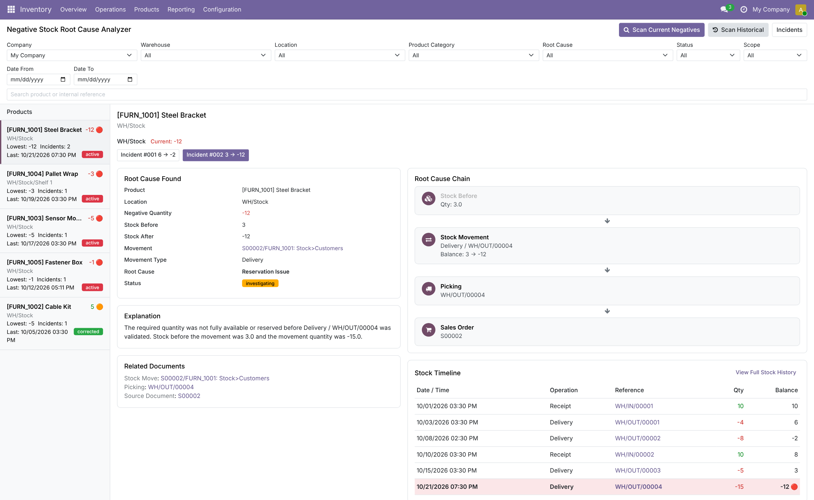
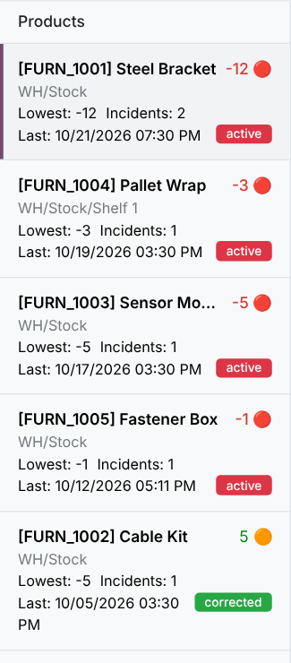
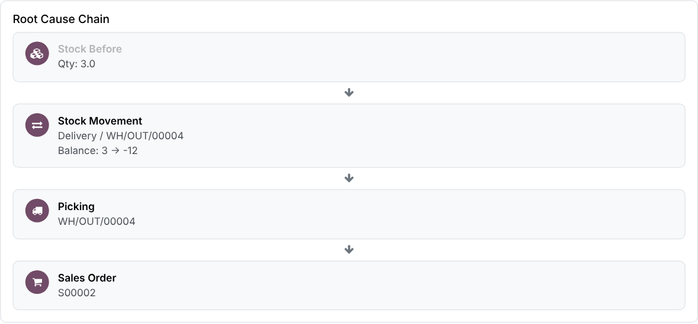
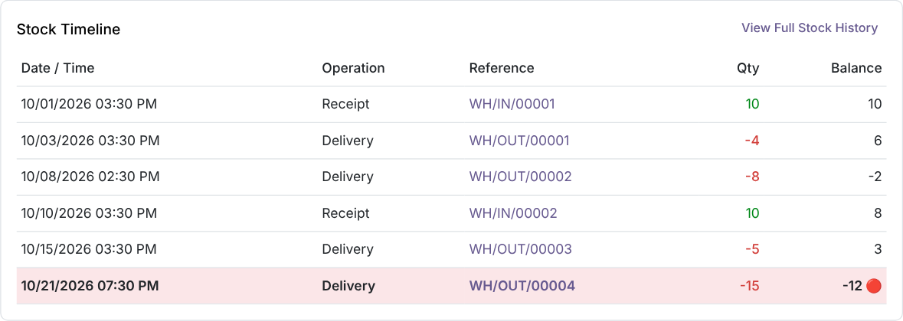
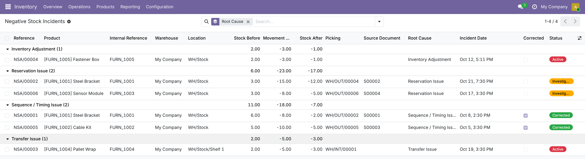
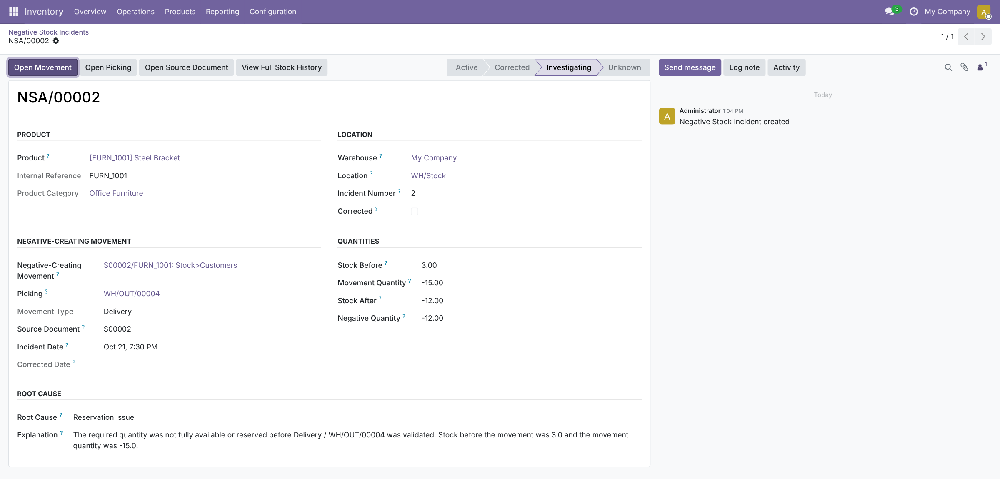
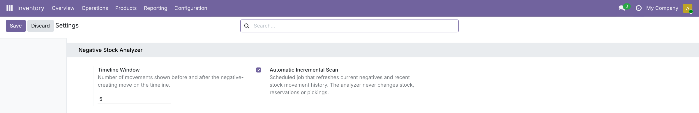

Odoo tells you a product is negative. This module tells you why. It replays the stock movement history per product and location, pinpoints the exact movement that pushed the balance below zero, classifies the root cause and links you straight to the picking and source document.

All analysis runs server-side on standard stock.move data. Nothing is changed in your stock.
Click Scan Current Negatives (locations negative right now) or Scan Historical (done moves, so negatives that were already corrected are found too). A daily scheduled scan can keep this up to date for you.
For each product and internal location, done moves are walked in date order and a running balance is calculated. Each time the balance goes from ≥ 0 to < 0, an incident is recorded.
The triggering move is checked against its picking type, its reservation and forecast, the receipts that follow it and inventory locations. From that it gets a root cause type and a plain-language explanation.
When a later move brings the balance back to ≥ 0, the incident is flagged Corrected with the correction date. If the same product goes negative again later, that becomes a new incident.
The checks run in this order, and the first one that matches sets the root cause.
| Root cause | Detected when | Initial status |
|---|---|---|
| Inventory Adjustment | The move is an inventory adjustment (from or to an Inventory type location) | Active |
| Transfer Issue | An internal transfer moved more out of the location than it held | Active |
| Sequence / Timing Issue | Stock went out before a receipt that is posted shortly afterwards, so the delivery was validated too early | Active |
| Reservation Issue | The demand was larger than available stock and the forecast showed it was not fully reserved | Investigating |
| Insufficient Stock | The move consumed more than the balance that was available | Active |
| Manual / Unidentified Movement | The move is not linked to any picking | Unknown |
| Unknown | Not enough information to be more specific | Unknown |
Go to Inventory → Reporting → Negative Stock Analyzer. The left panel lists every product and location that has gone negative at least once:


Pick an incident to see how it happened, as a chain of linked documents:
Stock Before → Stock Movement → Picking → Source Document → Related Moves
Every node opens the standard Odoo form. The source document is found automatically when it exists: Sales Order, Purchase Order or Manufacturing Order. Nodes only show when the user has read access to that record.
Next to the chain you get a Root Cause Found summary, a generated Explanation and a Related Documents list.
See the movements before and after the move that caused the problem, with the running balance after each one. The row that took stock negative is highlighted.
If a product goes negative more than once, each time is a separate incident (Incident #001, #002…), so repeated problems are easy to see.

Inventory → Reporting → Negative Stock Incidents lists every incident in a standard list view. You can filter by Active, Corrected, Current Negative, Historical Negative, each root cause or incident date. You can group by product, location, warehouse, company, root cause, status or product category.

Each incident gets a reference (NSA/00001…) and a read-only form showing the product, location, the move that caused it, quantities, root cause and explanation. Buttons open the Movement, Picking, Source Document or the Full Stock History. A chatter lets your team discuss the incident.

Go to Inventory → Configuration → Settings → Negative Stock Analyzer:

The analyzer only investigates. It never validates pickings, changes reservations, modifies quantities or creates inventory adjustments. Users open the linked record and fix it the normal Odoo way.
Menus are available to Inventory / User. Settings are restricted to Inventory / Administrator. Multi-company record rules apply, and linked documents only show when the user is allowed to read them.
Depends only on Inventory (stock) and mail. Sales, Purchase and Manufacturing documents are added to the chain automatically when those apps are installed. No changes to standard flows.
Use the Support contact on this app page and we will get back to you.
Version 19.0.1.0.0 · License OPL-1